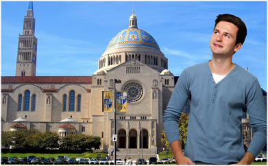

Modern Thinking. Grounded in Tradition.
Old-School. Innovative. Traditional.
Cutting-Edge.
Quirky. Clever. Cool.
Urban. Tranquil. Artsy. Refined.
Global. Adventurous. Inspired.
This is CUA.
Modern-Thinking. Grounded in Tradition. Because at The Catholic University of America, we maintain time-honored traditions while encouraging independent and creative intellectual pursuits. Our students are global-ready, service-minded, and purpose-driven. They are scientists and songwriters, social workers and aspiring senators – and YOU.
EXPERIENCE CUA for yourself!
Take a little stress out of your junior year with a road trip to DC! Visiting CUA is a great way to see what it's like to live and study in one of the nation's largest college towns. Call 800-673-2772 or register online to schedule your visit, or register for one of our Open Houses or Focus Days.
Picture Yourself Here. (Literally!)
Simply take a selfie, then place it on your choice of CUA's most popular landmarks and campus hot spots. Post your shot on Facebook, Twitter, and Instagram so your friends can see you at CUA too!
 GET STARTED!
The CUA Advantage
"Life is a journey. When we stop, things don't go right."
–Pope FrancisAt The Catholic University of America, we're always on the move. Toward inquiry and discovery. Intellectual diversity. Global outreach.
With roots dating back to 1887, we have evolved into an innovative and forward-thinking campus defined by academic energy, exploration and commitment to service. Our students reach for the stars, but are grounded by faith.
At CUA, we never stop in our pursuit of the BEST that higher education can offer.
What You'll Gain at CUA:
- A stunning 180-acre tree-lined campus just minutes away from the unparalleled opportunities provided by our nation's capital
- Small classes taught by renowned faculty
- Unrivaled commitment to public service
- Unmatched access to internships
- In-class learning combined with hands-on experiences
- Unique opportunities to conduct scholarly and scientific research
- Expansive study-abroad opportunities offering programs everywhere from Rome, Italy to Sydney, Australia
- An atmosphere where freedom is fostered, truth imparted, integrity upheld
Where you take your journey makes all the difference. Why settle for "almost" what you want?
See Yourself Here:
CUA Snapshot:
3,600 Undergraduate Students10:1 Student-to-Faculty Ratio
2,500 Graduate Students
45 Percent Male
55 Percent Female
About CUA
The TRUTH About CUA.
The accolades keep coming in. The Princeton Review has ranked CUA as one of the Northeast's BEST colleges for excellent academic programs. Fiske has named us a BEST BUY. Not bad, but the truth is, we're even MORE.
Consider this:
- At CUA, you'll be taught by the BEST. Ninety-seven percent of our faculty hold the highest degrees in their field.
- At CUA, you'll NEVER be a number. While you'll enjoy the resources of a major research university, we keep class sizes small and personal. So there's nowhere to hide, but plenty of room to shine.
- At CUA, we carry the notable distinction of being THE national university of the Catholic Church. That said, we're not pushy. While guided by Christian thought and ideals, we welcome students of all faiths and respect individual worship.
CUA Snapshot:
90 Student Clubs and Organizations17 esidence Halls
91 Percent of Graduates Employed Within 6 Months
33 Percent go on to Graduate School
Washington D.C.
Bright Lights, Big City – and a Healthy Dose of Green
From majestic monuments and awe-inspiring art museums to chic shops and free festivals, Washington, DC, has it all. And CUA's on-campus Metrorail stop will whisk you in mere minutes to all the hot spots you'll want to hit.
What's more, our nation's capital is a hotbed for corporate, congressional, government, high-tech, and medical internships, so you'll be a step ahead when it's time to land your dream job. And did we mention you'll be in the middle of one of the nation's largest college towns, with more than 400,000 other students studying at area colleges and universities?
Need a break from the bright lights, big city? CUA's got you covered. Our lush 180-acre tree-lined campus – the ONLY one of its kind in DC – is an oasis amidst the concrete, offering:
- Grassy expanses for socializing, studying,and serenity
- 90 student clubs and organizations
- 21 NCAA Division III intercollegiate sports teams, PLUS 10 club sports
- 50 service opportunities EACH WEEK
See Yourself Here:
CUA Snapshot:
3 Miles from Campus to US Capitol0 Cost to Explore 19 Smithsonian Museums, Attend Outdoor Festivals and Concerts, and Window-shop in Georgetown
2,000 DC Internship Opportunities Available to CUA Students Each Year
Academic Programs
Find Your Passion Here!
At CUA, we make it easy. With more than 70 academic programs and nine undergraduate schools, CUA will lead you down your own unique path – and prepare you to take on any job or graduate school.
Undergraduate Offerings
School of Architecture and Planning
- Four-Year Bachelor of Science in Architecture
- Dual Degree Program with Civil Engineering
School of Business and Economics
- Accounting
- Economics
- Finance
- International Business
- International Economics and Finance – Honors
- Management
- Marketing
School of Engineering
- Biomedical
- Civil
- Construction
- Dual Degree with Architecture
- Computer Science
- Electrical
- Alternative and Renewable Energy
- Mechanical
- Environmental
Benjamin T. Rome School of Music
- Bachelor of Art, Music
- General
- Performance
- Music History and Literature
- Bachelor of Music
- Collaborative Piano
- Composition
- Music Education
- General – Choral Music Education
- Instrumental Music Education
- Combined General – Choral and Instrumental Music Education
- Instrumental Music Education/Orchestral
- Instruments (Dual Degree)
- Musical Theater
- Performance
- Orchestral Instruments
- Organ
- Piano
- Voice
- Piano Pedagogy
The School of Theology and Religious Studies
- Bachelor of Arts in Theology and Religious Studies
- Certificate in Pastoral Ministry
Metropolitan School of Professional Studies
- Bachelor of Arts in Information Technology (B.A.I.T)
- Bachelor of Arts in Interdisciplinary Studies (B.A.I.S.)
- Bachelor of Arts in Management (B.A.Mgt.)
School of Arts and Sciences
- Anthropology
- Art History
- Art: Studio
- Biochemistry
- Biology
- Chemical Physics
- Chemistry
- Classical Civilization
- Classical Humanities
- Classics: Greek and Latin
- Drama
- Education
- Early Childhood Education
- Elementary Education
- Secondary Education
- Education Studies (non-teaching)
- English Language and Literature*
- Environmental Chemistry
- French
- German
- History*
- Italian Studies
- Mathematics*
- Media Studies
- Medieval and Byzantine Studies
- Philosophy
- Philosophy Concentration
- Pre-Law Concentration
- Physics
- Politics
- Psychology
- Sociology
- Spanish
- Spanish for International Service
- Theology and Religious Studies
- Undecided/Exploratory
*Indicates areas of study that are also offered with Secondary Education Minor
School of Nursing
- Four-Year Bachelor of Science
School of Philosophy
- Philosophy Program of Concentration
The School of Theology and Religious Studies
- Bachelor of Arts in Theology and Religious Studies
- Certificate in Pastoral Ministry
National Catholic School of Social Service
- Social Work
Preprofessional Studies
- Dental
- Law
- Medicine
- Veterinary
Note: Students interested in Preprofessional Studies must also select an official major, such as biology, biomedical engineering or politics.
See Yourself Here:
CUA Snapshot:
20 Average Class Size97 Percent of Faculty Hold Highest Degrees in Their Field
72 Academic Programs
9 Undergraduate Schools
Commitment to Service
"We all have a duty to do good."
–Pope FrancisIf you want to make a difference, you've come to the right place. CUA students are serious about service. Some stay local, building affordable housing and volunteering at homeless shelters in the DC area. Others serve globally, staffing refugee centers, working with physically or emotionally challenged children, and volunteering in medical clinics. Helping others, our students discover themselves.
The opportunities are limited only by your imagination. Our students have:
- Traveled to Jamaica to work with disabled children
- Worked at an acupuncture hospital in Vietnam
- Volunteered at DC's Best Buddies program
PLUS, new CUA events – Athlete Service Day and a partnership with the Ronald McDonald House at Children's Hospital – have already made their mark. And the annual MLK Day of Service is one of the highest attended events every year!
See Yourself Here:
CUA Snapshot:
65 Percent of Students Participate in Service50 Service Opportunities per Week
Scholarships and Financial Aid
College Costs Daunting?
At CUA, we can help. We know that financing a college education can be overwhelming. CUA is committed to helping as many students as possible achieve their educational goals. That's why we have a variety of programs to help our students finance their education.
For qualified students, we offer:
- CUA Grant and Federal Aid
- Merit-based Scholarships
- $3,000-per-year Parish Scholarships
- $1,000-per-year Alumni Grants
- Eight- or Ten-Month Payment Plan
For more information about financial aid and scholarships at CUA, please visit http://admissions.cua.edu/undergrad/finaid/index.html
CUA Snapshot:
90 Percent of Students Receive Scholarships and Financial Aid20 Number of Years CUA Has Been Named a Best Buy by Fiske